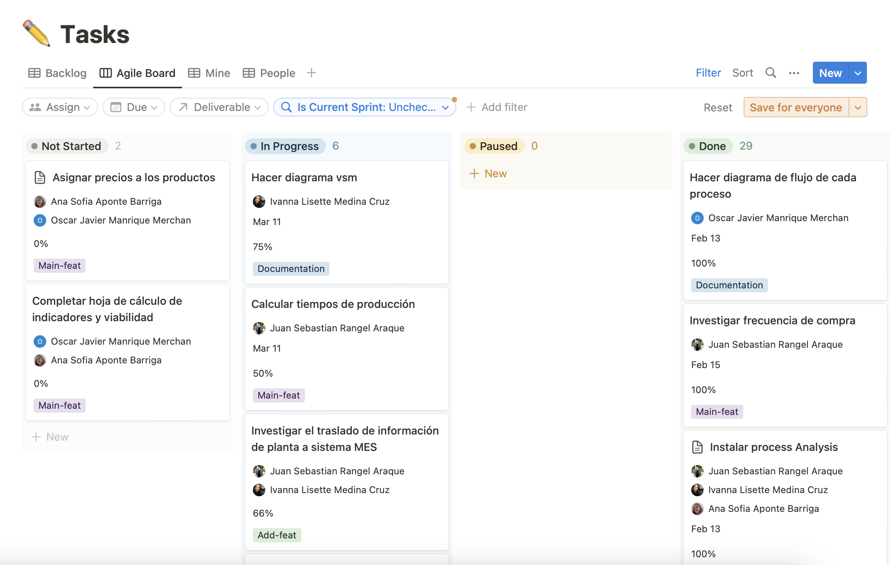

Estructura de Desglose de Trabajo - Ruta Crítica
En el siguiente link se encuentra una vista gráfica de la estructura de desglose de trabajo, donde se puede ver de una forma interactiva: Estructura de Desglose de Trabajo
| ID | Categoría | Descripción |
|---|---|---|
| Objetivo | Mejorar la eficiencia en la producción de productos | |
| C1 | Componente | Diseñar un conjunto de 3 productos que permitan automatización |
| 1.1 | Producto | Concepción y selección de productos |
| 1.1.1 | Paquete de Trabajo | Consulta de productos posibles |
| 1.1.2 | Paquete de Trabajo | Elaboración de propuestas de productos |
| 1.1.3 | Paquete de Trabajo | Definir criterios de selección y selección de productos |
| 1.2 | Producto | Requerimientos de cada producto |
| 1.2.1 | Paquete de Trabajo | Definir proceso de producción de cada producto |
| 1.2.2 | Paquete de Trabajo | Listado de materias primas |
| C2 | Componente | Diseñar el proceso productivo |
| 2.1 | Producto | Adquisisión de equipos para automatización del proceso |
| 2.1.1 | Paquete de Trabajo | Listado de equipos y capacidades actuales |
| 2.1.2 | Paquete de Trabajo | Listado de equipos requeridos |
| 2.1.3 | Paquete de Trabajo | Búsqueda de equipos y elaboración de propuestas |
| 2.1.4 | Paquete de Trabajo | Selección de equipos y compra de los mismos |
| 2.2 | Producto | Diseño de un proceso productivo óptimo |
| 2.2.1 | Paquete de Trabajo | Entendimiento de procesos y capacidades actuales |
| 2.2.2 | Paquete de Trabajo | Investigación y generación de propuetas de mejora |
| 2.2.3 | Paquete de Trabajo | Aprobación de mejoras |
| 2.3 | Producto | Informe donde se cuantifique el impacto de las mejoras |
| 2.3.1 | Paquete de Trabajo | Simulación de las mejoras a implementar y estimación de impacto |
| 2.3.2 | Paquete de Trabajo | Selección de métricas de comparación |
| 2.3.3 | Paquete de Trabajo | Levantamiento de datos referente al proceso actual |
| 2.3.4 | Paquete de Trabajo | Comparación y contraste de simulaciones |
| C3 | Componente | Mejorar la infraestructura de la planta |
| 3.1 | Producto | Informe de estado actual |
| 3.1.1 | Paquete de Trabajo | Levantamiento de planos de distribución actual |
| 3.1.2 | Paquete de Trabajo | Entrevista con trabajadores en busca de oportunidades de mejora |
| 3.2 | Producto | Intervención sobre la planta |
| 3.2.1 | Paquete de Trabajo | Diseño de la nueva distribución |
| 3.2.2 | Paquete de Trabajo | Aprobación de la nueva distribución |
| 3.2.3 | Paquete de Trabajo | Implementación de la nueva distribución |
| C4 | Componente | Mejorar los procesos de gestión |
| 4.1 | Producto | Capacitación de personal |
| 4.1.1 | Paquete de Trabajo | Elaboración Material de Capacitación |
| 4.1.2 | Paquete de Trabajo | Capacitar personal respecto a equipos y procesos |
| 4.2 | Producto | Mejoras en el sistema administrativo |
| 4.2.1 | Paquete de Trabajo | Entendimiento del actual sistema de gestión |
| 4.2.2 | Paquete de Trabajo | Identificación de oportunidades de mejora en gestión |
| 4.2.3 | Paquete de Trabajo | Presentación de propuestas de mejora en gestión |
| 4.3 | Producto | Validación de impactos y mejoras |
| 4.3.1 | Paquete de Trabajo | Validar resultados de simulaciones vs comportamiento actual |
| 4.3.2 | Paquete de Trabajo | Validar opinión de trabajadores |
| 4.3.3 | Paquete de Trabajo | Elaboración informe resultados |


Herramientas
Para el desarrollo del proyecto, se decidió utilizar la metodología ágil SCRUM, que permite una constante comunicación entre los miembros del equipo, así como una mayor eficiencia en el desarrollo del mismo, al plantear mínimos productos viables a realizar en sprints no mayores a dos semanas, lo que hace que el trabajo asignado se sienta más ligero y constante a lo largo del ciclo de vida del proyecto. Como parte de la planeación del proyecto se utilizaron las siguientes herramientas, las cuales facilitaron no solo la planeación de tareas, sino también la asignación de las mismas, verifricación de avances y registro de retos en el desarrollo de las mismas:
- Cronograma de actividades: 
- Plataforma de planeación y asignación de tareas NOTION: Se utilizó con el fin de definir roles y links importantes de fácil acceso. A su vez, se registraban los sprints con sus respectivos entregables, incluyendo los responsables de cada entregable. Finalmente, se incluyó un Backlog con las tareas requeridas para completar cada entregable definido, así como la persona encargada de cada tarea.
- Plataforma de registro de actividades ONENOTE: En esta plataforma se lleva un registro de todas las reuniones sostenidas en el equipo, así como una encuesta "daily", realizada periódicamente para conocer el avance de cada miembro en sus tareas y entregables asignados.